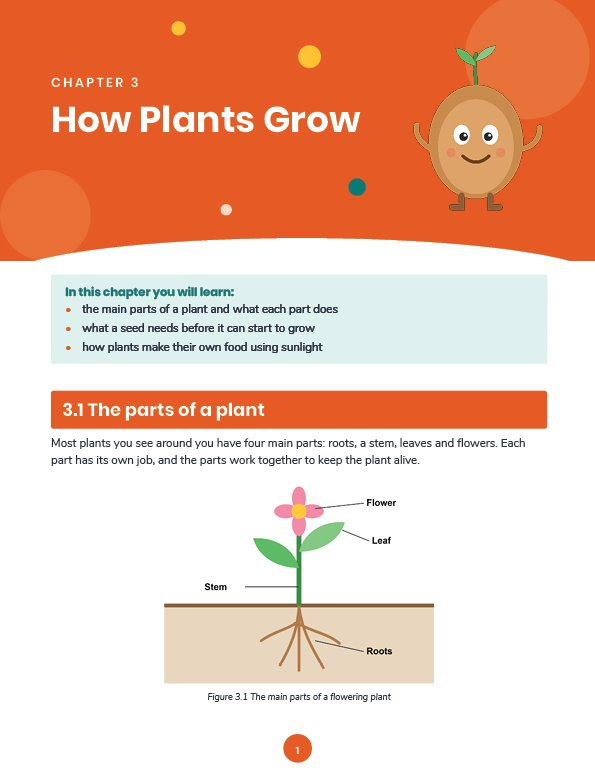
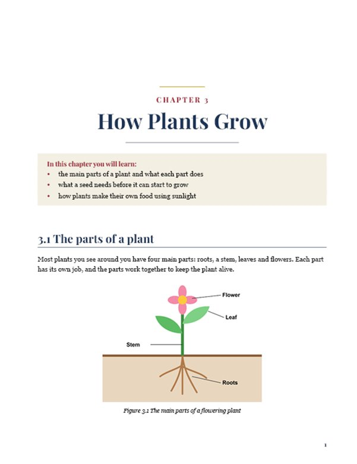
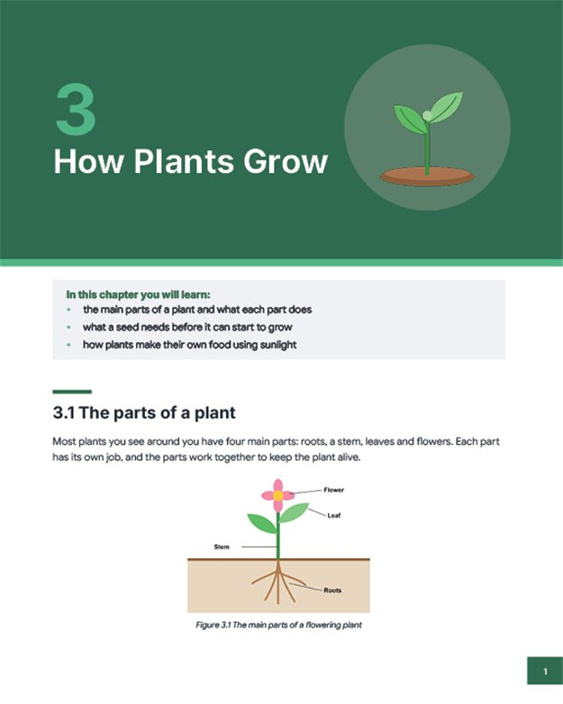
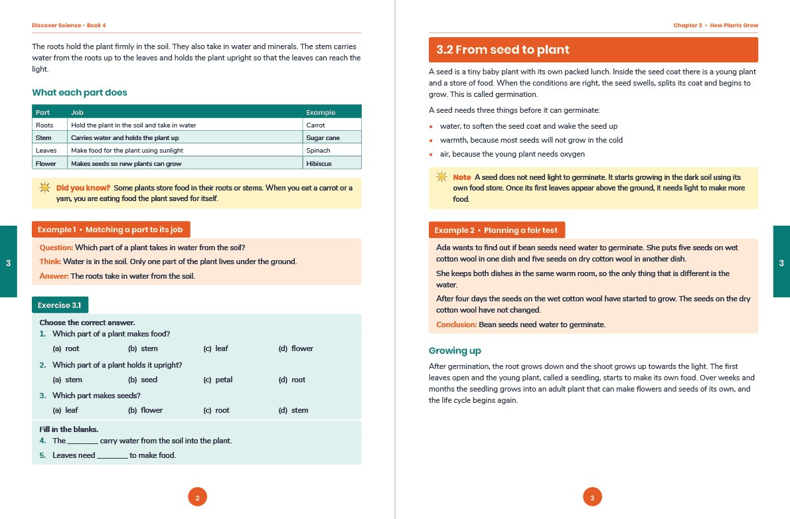
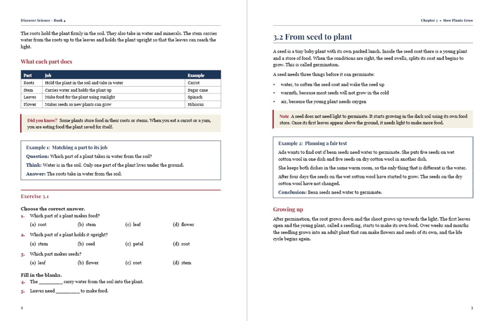
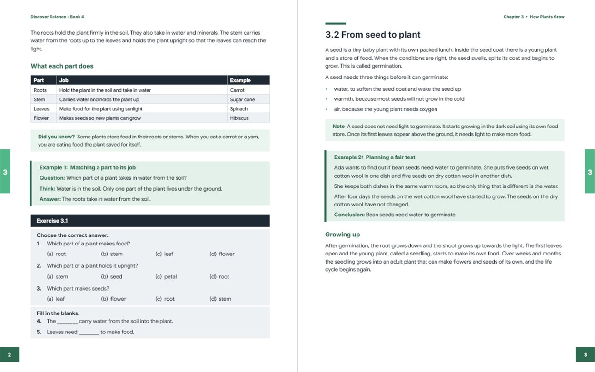
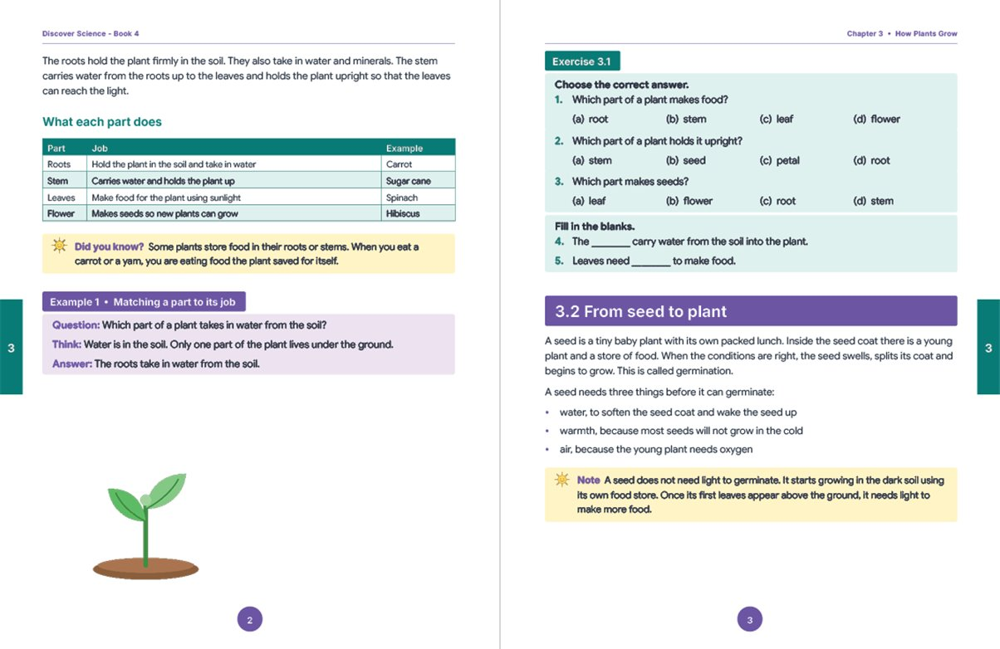

Galley lays out long, structured books (textbooks and workbooks) in InDesign. You set the style once; it sets every example box, exercise and heading, then checks every page.



The same sample chapter, built three times by the prototype from one Word file. Each one is a native, editable InDesign document.
A workbook chapter has a dozen boxed examples, exercises with answer lines, notes and tables. Designers style each one by hand, chapter after chapter, book after book in the series.
Boxes and pictures sitting loose on the page don't move when the text changes. One late copy edit can shift every page after it, and someone has to re-place them.
Overset text, a box split over two pages, a heading stranded at the foot of a page. These are found by paging through proofs, late, and found again after the next edit.
Time goes into production instead of the choices that matter: the opener, the box system, the palette, the pacing of each spread.
Both end the same way: real InDesign pages with paragraph styles, anchored objects and an automatic QA pass.
■ required · □ optional. References set style parameters; nothing is copied from them onto the page.
Word headings, typed markers like “Example 2:” and “Exercise 3.1”, numbered questions, (a)–(d) options, tables, pictures, captions and notes become structured content. Every guess is listed for review.
Trim, margins, fonts, type scale, palette, and a treatment for the opener, headings, example and exercise boxes, notes, folio, header and side tab.
One threaded story. Boxes are paragraph styles with shading and borders, figures are anchored, tables are real tables, keep rules hold boxes together. Spot art sits on its own Illustrations layer.
Every page previewed and checked, then exported to PDF and PNG with a short report per look.
In the main story and inside every table cell.
Examples, notes, figures with captions and tables must sit on one page. Long exercises may continue, but only between questions.
A heading at the foot of a page is moved over to the text it introduces.
Content cut by the trim, anything outside the bleed, anchored art sticking out of the column.
It also flags missing or changed links, images under 150 ppi and empty pages. Many problems are fixed before QA even runs: a figure pushed to the next page is scaled down if that keeps it in place, a table's lead-in travels with the table, and answer options are set on 4, 2 or 1 columns by measuring the set text.
A generic six-page science chapter (headings, a table, two diagrams, three worked examples and activities, three exercises, notes), built end to end on Windows with InDesign 2022.




Each look builds in under a minute and is a normal InDesign file a designer can keep working in: change the “Example Head” paragraph style and every example in the chapter follows. A local web page walks the designer through the checklist, runs the builds and shows the previews and QA side by side.
Teams producing textbooks, workbooks and revision guides: many chapters, a fixed system of boxes and exercises, and frequent revisions. Designers stay in InDesign; Galley does the repetitive setting and the checking.